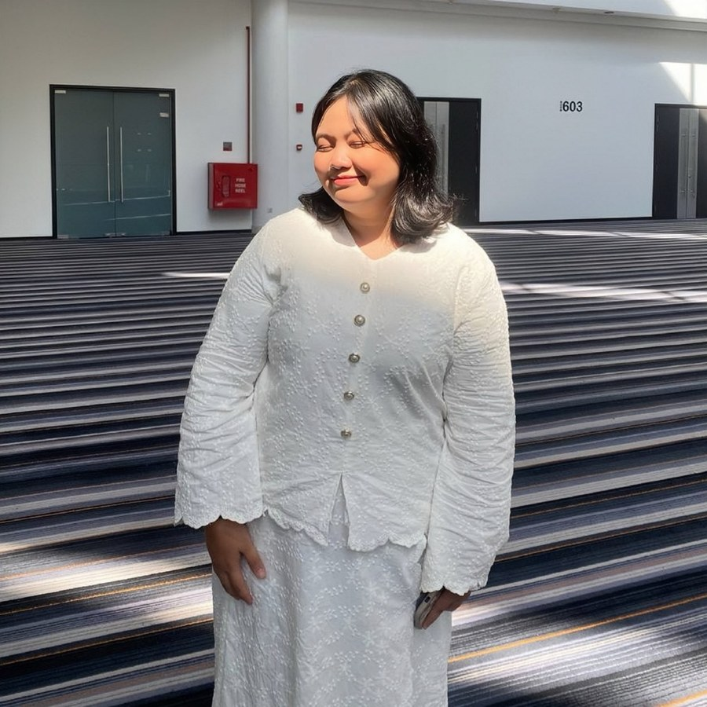

Introduction
E-commerce in Malaysia grew quickly after the COVID-19 pandemic, and platforms such as TikTok Shop have become a major part of how Malaysians buy and sell products, commonly known as the "Yellow Basket" or "Beg Kuning." As competition among sellers increases, many TikTok Shop sellers are turning to Artificial Intelligence (AI) to improve their operations, attract customers, and increase sales. This study examines whether AI adoption, the factors that influence it, and customer satisfaction and trust actually contribute to environmental sustainability among these sellers.
Problem Statement
TikTok Shop sellers face growing pressure to stay competitive, and many are turning to AI to help. However, it is still unclear whether AI adoption actually supports business sustainability, especially environmentally. Some sellers also face barriers to adopting AI, such as limited resources, skills, or external support. This study investigates how AI adoption affects environmental sustainability among TikTok Shop sellers in Malaysia.
Research Objectives
To evaluate the influence of organizational and external factors on AI adoption among TikTok Shop sellers in Malaysia.
To evaluate the direct impact of AI adoption on customer sustainability among TikTok Shop sellers in Malaysia.
To evaluate the direct impact of AI adoption on environmental sustainability among TikTok Shop sellers in Malaysia.
To determine the overall combined effect of AI adoption on long-term business sustainability among TikTok Shop sellers in Malaysia.
Research Questions
How do organizational and external factors influence AI adoption among TikTok Shop sellers in Malaysia?
What is the direct effect of AI adoption on customer sustainability among TikTok Shop sellers in Malaysia?
What is the direct effect of AI adoption on environmental sustainability among TikTok Shop sellers in Malaysia?
How significantly does AI adoption contribute to overall long-term business sustainability among TikTok Shop sellers in Malaysia?
Hypothesis
Demographic Profile → Environmental Sustainability. There is a significant difference in environmental sustainability among TikTok Shop sellers based on their demographic profiles. Prior TOE-based studies on Malaysian MSMEs have tested whether firm-level or individual characteristics moderate the strength of technology-adoption relationships, so gender, age, business type and years of experience are expected to shape how strongly AI-related factors translate into environmental outcomes.
AI Adoption → Environmental Sustainability. There is a significant relationship between AI adoption and environmental sustainability. AI tools such as predictive inventory management are theorised to reduce overproduction and unsold stock, in line with how Diffusion of Innovation theory describes AI spreading through practical, observed benefits among peer sellers.
Factors Influencing AI Adoption → Environmental Sustainability. There is a significant relationship between factors influencing AI adoption and environmental sustainability. The TOE framework explains that organizational conditions (management support, employee skills) and environmental conditions (cost, government support) determine whether AI is implemented effectively enough to support sustainable practices.
Customer Satisfaction and Trust → Environmental Sustainability. There is a significant relationship between customer satisfaction and trust and environmental sustainability. Sellers who build stronger customer relationships through reliable AI interactions are more likely to sustain long-term operations, supporting continued investment in sustainable practices rather than short-term survival tactics.
Scope of Study
This study focuses on the retail and e-commerce industry in Malaysia, specifically targeting active sellers on TikTok Shop, one of the country's fastest-growing social commerce platforms. Data is collected through an online questionnaire hosted on Google Forms and distributed through digital channels such as WhatsApp and TikTok to reach respondents efficiently. Rather than covering every aspect of a seller's operations, the research is scoped around understanding how sellers experience and perceive AI adoption, the conditions that shape whether they take it up, and what that adoption ultimately means for environmental and business sustainability within the Malaysian social commerce landscape.
Significance of Study
Adds to the growing body of research on AI adoption and sustainability by extending a stream of literature that has mostly focused on large corporations to small and medium retail and e-commerce sellers, linking adoption drivers such as cost, management support, employee skills, and government support to environmental and customer-facing outcomes.
Helps TikTok Shop sellers identify which factors matter most when deciding to adopt AI, so they can plan their investment more deliberately around what actually supports their sustainability goals and customer relationships. Also gives government agencies a clearer basis for designing support programmes and incentives.
Provides a foundation for future studies extending this model to other e-commerce platforms or industries beyond TikTok Shop, and for exploring variables not covered here, such as cybersecurity or data privacy concerns in AI-driven retail.
Literature Review
Underpinning Theory
This study is grounded in the Diffusion of Innovation (DOI) Theory linked to the Technology-Organization-Environment (TOE) Framework. DOI theory explains how AI tools such as chatbots and inventory systems spread among TikTok Shop sellers as they observe the results achieved by similar businesses. The TOE framework explains AI adoption through three factors: technology, organization (management support, employee skills), and environment (cost, government support).
Variables of Study
AI Adoption
The extent to which a business incorporates AI tools such as chatbots, personalised recommendation systems, and inventory management software into its daily operations. Rather than a simple yes-or-no decision, adoption is treated as a matter of degree, consistent with how Diffusion of Innovation theory describes new technology spreading gradually as sellers observe results achieved by their peers.
Factors Influencing AI Adoption
The organizational and environmental conditions that shape whether a business adopts AI. Organizational factors include management support and employee technical skills; environmental factors include the cost of AI tools and the availability of government grants or training programmes. Together, grounded in the Technology-Organization-Environment framework, these conditions determine whether adoption translates into real benefits.
Customer Satisfaction and Trust
How positively customers respond to a seller's AI-enabled tools, such as chatbots and personalised product recommendations, and how much confidence they place in those tools when deciding to buy. This captures the market-facing side of AI adoption, where customer approval is what allows continued investment in AI to pay off.
Environmental Sustainability
A business's ability to reduce its negative impact on the environment, through less wasted stock, more efficient use of resources, and lower energy consumption, while still remaining commercially viable. Because independently verified environmental data isn't available for small, individually run sellers, this study measures the construct through sellers' own reported perceptions.
Demographic Profile
Background characteristics of sellers, including gender, age, type of business, and years of business experience, expected to influence how strongly AI adoption and its related factors translate into environmental sustainability outcomes, rather than affecting sustainability directly on their own. Because TikTok Shop sellers in Malaysia are a highly varied group, this profile is tested as a moderator through multi-group analysis rather than treated as a simple background variable.
Research Methodology
Research Design
A quantitative approach with a cross-sectional, cause-and-effect design. Data is collected once from TikTok Shop sellers to test how AI Adoption, Factors Influencing AI Adoption, and Customer Satisfaction and Trust directly influence Environmental Sustainability, while examining the moderating role of Demographic Profile.
Population & Sampling
Active TikTok Shop sellers operating in Malaysia. Since no centralized sampling frame exists, this study uses convenience sampling, targeting sellers who currently use or have previously used AI tools. A minimum sample of 100 respondents will be collected, sufficient to support PLS-SEM analysis.
Measurement & Scaling
A five-point Likert scale (1 = Strongly Disagree, 5 = Strongly Agree) across four constructs, each measured with five items. Demographic information is measured using nominal and ordinal categorical items.
AI Adoption (IV1)
Factors Influencing AI Adoption (IV2)
Customer Satisfaction and Trust (IV3)
Environmental Sustainability (DV)
Data Collection
The questionnaire is distributed online through direct messaging on TikTok, Threads, and WhatsApp, targeting sellers who currently use AI in their operations. A reminder is sent approximately one week after initial distribution.
Data Analysis
Data is analyzed using SmartPLS (Partial Least Squares Structural Equation Modeling). Indicator reliability, path coefficients, and the R-square value are examined, followed by bootstrapping to test the significance of each hypothesized relationship.
About Us
Business Research Method (EIB20503) — Group 4, Class L08
Prepared for Mr. Amirul Daniel Sulaiman
